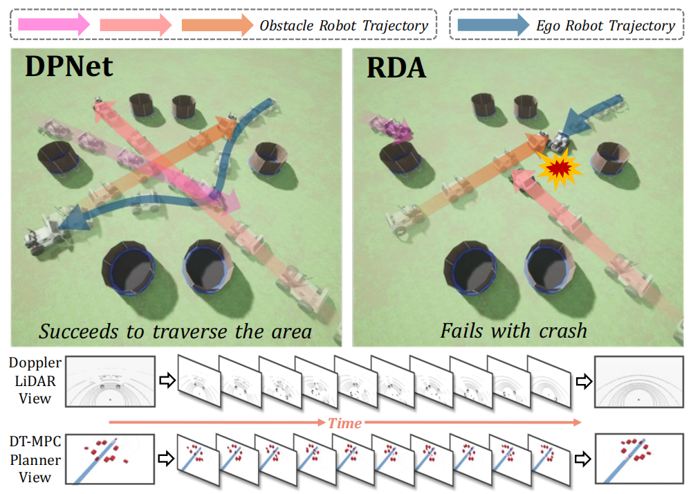
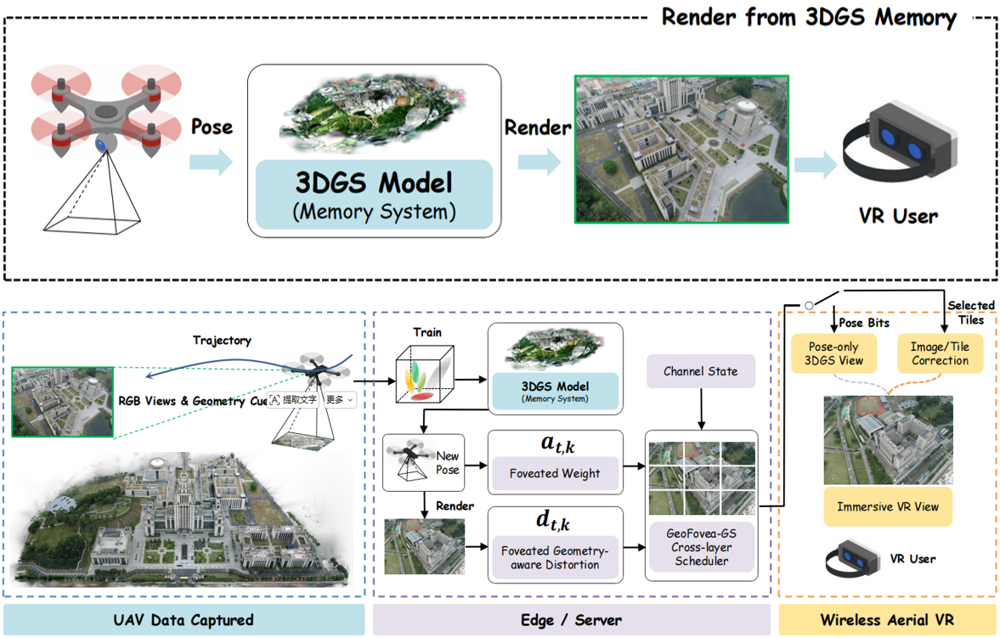
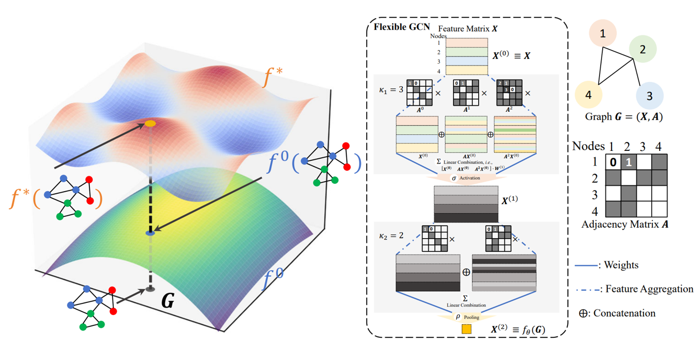
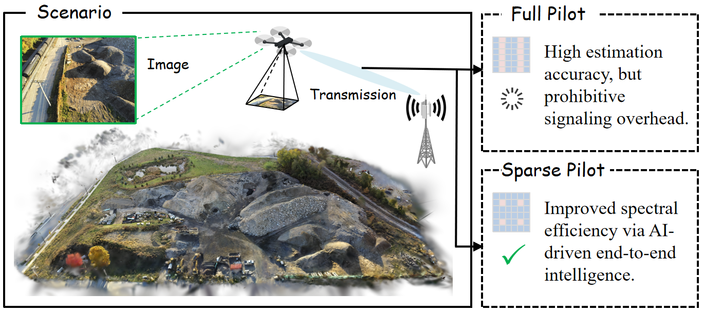
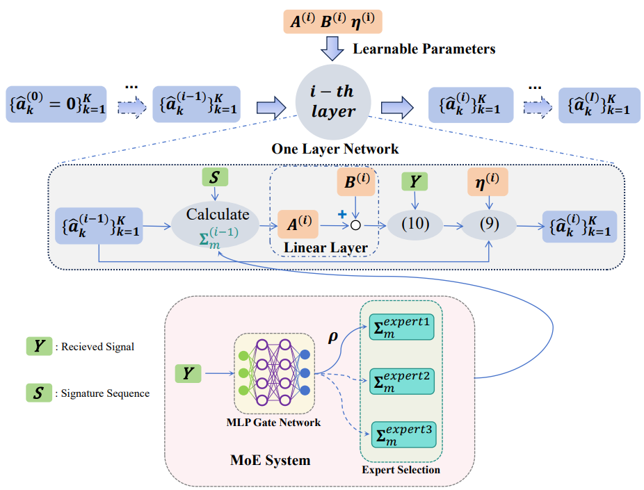
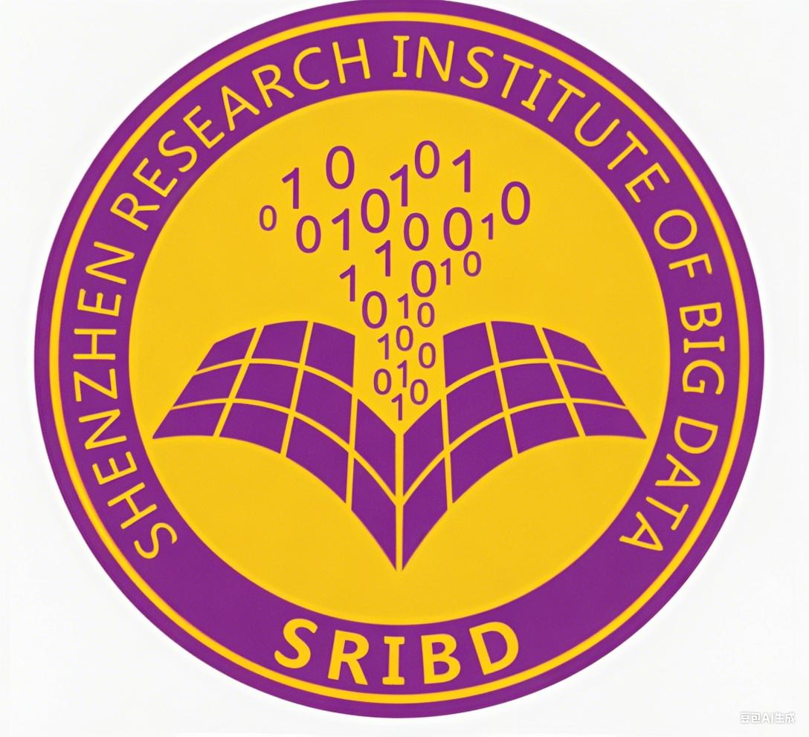

Zeyi Ren
🎓Ph.D. Student at Niulab @ Tsinghua University / 🌐AI/ML in RAN / 📸Spatial Intelligence
About
Hi, I am Zeyi Ren, a first-year Ph.D. student at Niulab in the Department of EE, Tsinghua University, under the supervision of Prof. Zhisheng Niu and Prof. Sheng Zhou. Before that, I obtained my M.Phil. degree from the Department of EEE, The University of Hong Kong, supervised by Prof. Yik-Chung Wu. I received my B.Eng. degree in Electronics and Information Engineering from Beijing Institute of Technology.
My research interests mainly focus on AI/ML in RAN, spatial intelligence, and autonomous systems. During my undergraduate studies, I worked on localization problems in wireless networks, with a particular emphasis on cooperative localization.
I have worked as a visiting research intern at Shenzhen Research Institute of Big Data, collaborating with Prof. Yang Li, and as a research intern at Huawei Shanghai RAN Research Department, focused on AI/ML in RAN. I am also a Bilibili content creator 🎥 with 200k followers.
News
- 2026.04 🎉One paper is accepted in IEEE International Symposium on Information Theory Workshop.
- 2026.04 🎉One paper is accepted in IEEE Robotics and Automation Letters.
- 2026.01 🖊️Start serving as a reviewer of IEEE Transactions on Wireless Communications.
- 2026.01 🎉One paper is accepted in IEEE International Conference on Communications.
- 2026.01 🎉One paper is accepted in IEEE ICASSP.
- 2025.09 🖊️Start serving as a reviewer of IEEE Open Journal of Communications Society.
- 2025.08 🎉Two papers are accepted in IEEE Global Communications Conference.
- 2025.07 🖊️Start serving as a reviewer of IEEE Wireless Communications Letters.
- 2025.06 🎉One paper is accepted in IEEE Wireless Communications Letters.
- 2025.06 🖊️Start serving as a reviewer of IEEE Transactions on Systems, Man and Cybernetics.
- 2025.06 🎉One paper is accepted in ICML ML4Wireless Workshop 2025.
- 2025.05 🖊️Start serving as a reviewer of IEEE Globecom and IEEE ICCC.
- 2025.05 🎉One paper is accepted in ICML 2025 and selected as spotlight.
Selected Works Full list on Google Scholar

DPNet: Doppler LiDAR Motion Planning for Highly-Dynamic Environments
IEEE Robotics and Automation Letters



-

Mixture of Experts-augmented Deep Unfolding for Activity Detection in IRS-aided Systems
IEEE Wireless Communications Letters
Education
-
2026.01-present
Tsinghua University
Ph.D. in Information and Communication Engineering
-
2023.09-2025.11
The University of Hong Kong
M.Phil. in Wireless Communications and Machine Learning
-
2019.09-2023.06
Beijing Institute of Technology
B.Eng. in Electronics and Information Engineering
Intern & Work Experience
-
2025.08-2025.11
Huawei Technologies, Shanghai
AI research intern. Mentors: Dr. Qingfeng Lin and Dr. Yan Sun.
AI/ML in RAN; DMRS-less end-to-end transceiver design; diffusion models and flow matching for channel estimation.
-
2024.08-2025.02

Shenzhen Research Institute of Big Data
Visiting research intern. Mentor: Prof. Yang Li.
User allocation with mixed-integer optimization; Mixture-of-Experts augmented wireless networking.
Other Activities
I like playing football ⚽ in my spare time. I was the captain of the HKU Postgraduate Student Association football team, and I was also a registered player in the Hong Kong Legal League division 2, playing for Dong Feng Express 🚀.